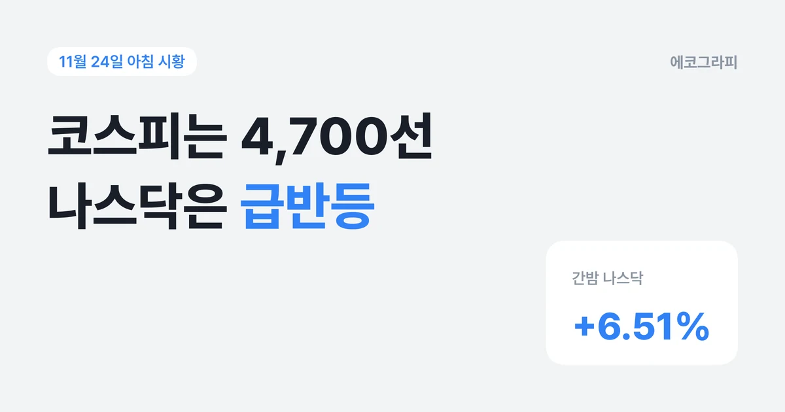
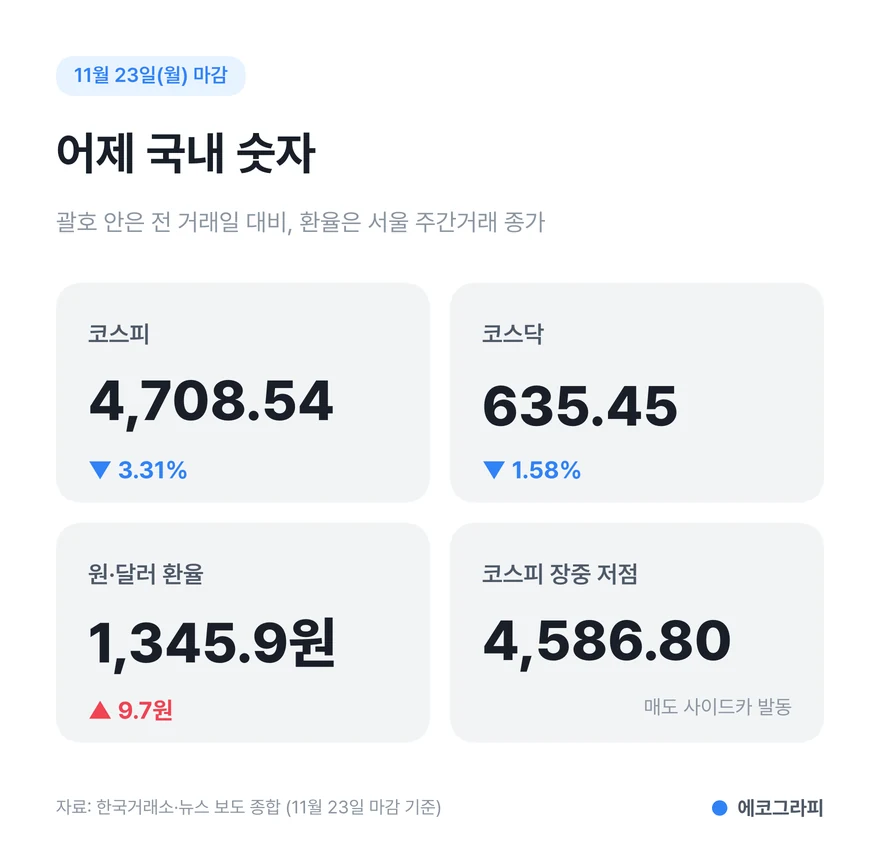
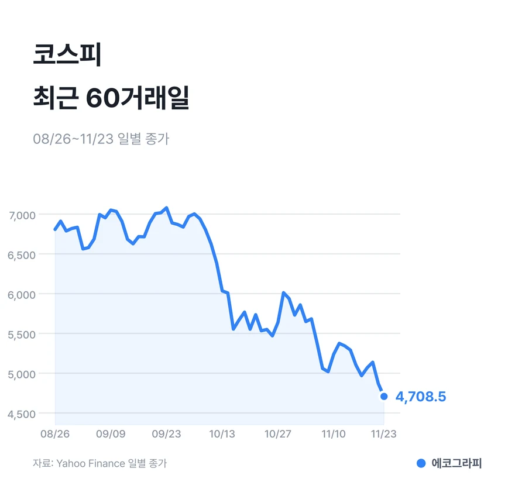
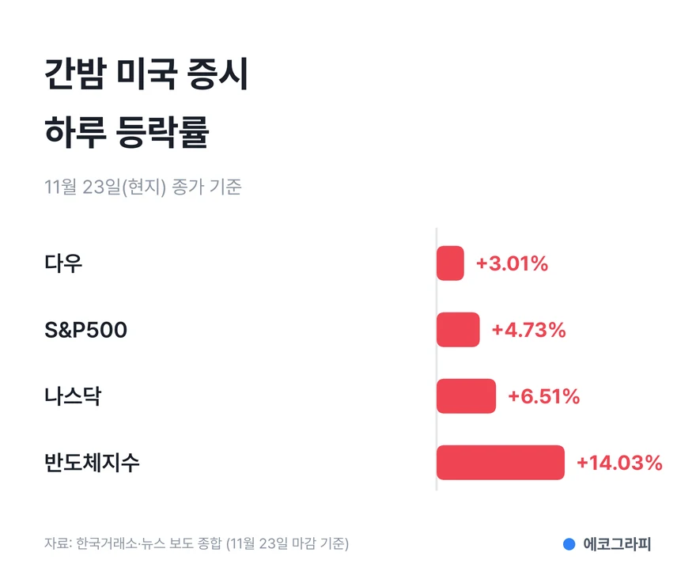
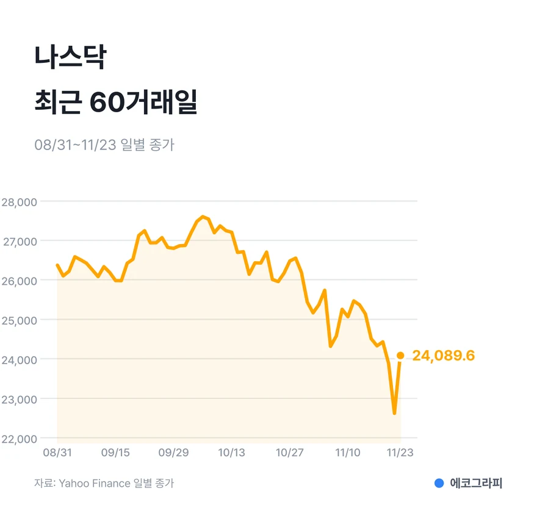
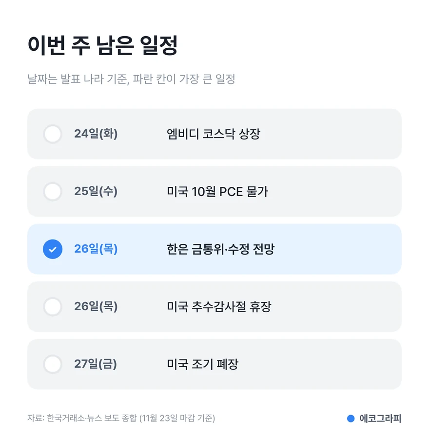

23일(월) 코스피는 하루 161.42포인트(3.31%) 내린 4,708.54로 마감했어요. 장중엔 4,586.80까지 밀렸다가 기관 매수가 들어오며 4,700선은 지켰어요. 코스닥은 1.58% 내린 635.45예요. 원·달러 환율 서울 종가는 9.7원 오른 1,345.9원이고, 장중엔 1,350원을 넘기도 했어요.

코스피에는 오전 11시 33분 매도 사이드카가 걸렸어요. 지난 금요일에 이어 이틀 연속이에요. 개인과 외국인이 함께 팔았고 기관이 샀어요(매체마다 집계 금액이 조금 달라 방향만 적었어요). 자세한 흐름은 어제 저녁 속보 글에 정리했어요.

60거래일로 보면 코스피는 9월 말 고점 이후 내려오는 흐름이 이어지고 있어요. 지난 금요일과 어제 이틀 동안만 8% 넘게 빠졌어요.
23일(현지) 뉴욕 증시는 크게 반등했어요. 다우는 3.01% 오른 49,595.31, S&P500은 4.73% 오른 7,237.22, 나스닥은 6.51% 오른 24,089.56으로 마감했어요. 나스닥과 S&P500은 2025년 4월 이후 가장 큰 하루 상승률이라고 해요. 필라델피아 반도체지수는 14.03% 올랐어요.


다만 지난주 나스닥은 6년여 만에 가장 큰 주간 하락을 겪었고, 세 지수 모두 고점보다 10% 넘게 내려온 '조정' 구간에 있었어요. 하루 반등만으로 흐름이 바뀌었다고 보기엔 이르다는 의견도 함께 나와요.
정부는 주말에 증권시장안정펀드(증안펀드) 가동 준비를 시작했고, 상장사 자사주 매수 주문 한도 완화도 오늘부터 3개월간 적용돼요. 증안펀드는 증안펀드 글을 참고하세요.

이번 주 전체 일정은 어제 아침 주간 일정 글에 있어요.
오늘 해볼 것: 급락 뒤 급반등이 나오는 날은 가격이 위아래로 크게 흔들리기 쉬워요. 서둘러 주문하기보다 내 계좌에 신용융자·미수 같은 빌린 돈이 있는지, 담보비율은 얼마인지 먼저 확인해 보세요.
꼭 그렇지는 않아요. 국내 시장은 미국과 업종 구성이 다르고, 이미 선물·환율에 일부 반영돼 출발하는 경우도 많아요. 방향은 참고하되 폭은 다를 수 있어요.
선물 가격이 이틀 연속 크게 빠졌다는 뜻이에요. 사이드카는 프로그램 매매를 5분 멈추는 장치일 뿐, 시장 방향을 정하지는 않아요.
케이엠에프는 청약 시작 전에 철회해서 낼 돈이 없어요. 청약 뒤 철회되는 드문 경우에도 증거금은 돌려받아요.
주가가 크게 빠지는 날은 위험을 피하려는 움직임과 외국인 매도가 겹쳐 원화가 약해지기 쉬워요. 어제도 외국인이 코스피에서 순매도했어요.
※ 2026년 11월 기준으로 정리한 글입니다. 세율·제도는 바뀔 수 있으니 거래 전 증권사·국세청 안내를 한 번 더 확인하세요. 특정 종목·상품의 매수·매도 권유가 아닙니다.